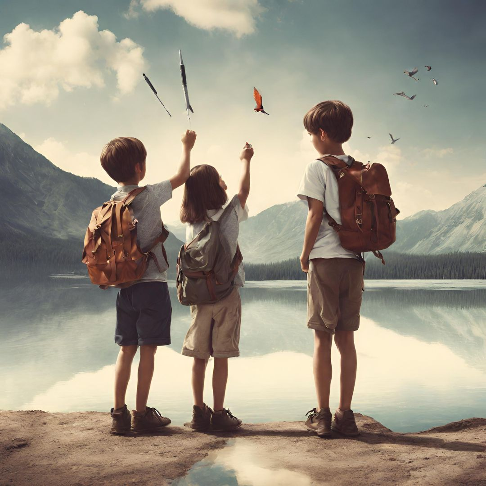

AI生圖教學
三位背著背包的孩子站在湖邊，舉手望向天空，飛鳥與火箭在雲間飛翔，象徵夢想與探索，畫面洋溢童年的好奇與希望。
青春歲月輕揮筆，課業壓力如山齊。友情如水深淺定，夢想翱翔心自遠。
當年少的我，總是在青春歲月中揮灑筆墨，追尋自己的夢想。課業的壓力時常如山一般沉重，但也讓我學會堅持與成長。與朋友們的友情如水，隨著時間流淌，時而深，時而淺，但總是讓我感到溫暖與支持。在這片廣闊的天空下，我的夢想如翱翔的鳥兒，無畏無懼，心隨夢遠，勇敢向前。這是我真實的寫照，也是我不斷追求的未來。
三位背著背包的孩子站在湖邊，舉手望向天空，飛鳥與火箭在雲間飛翔，象徵夢想與探索，畫面洋溢童年的好奇與希望。